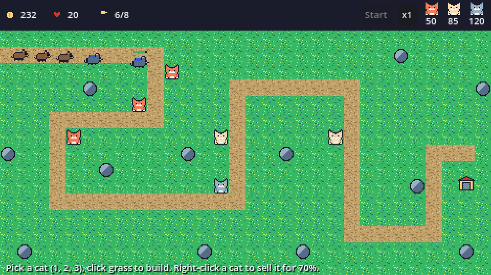
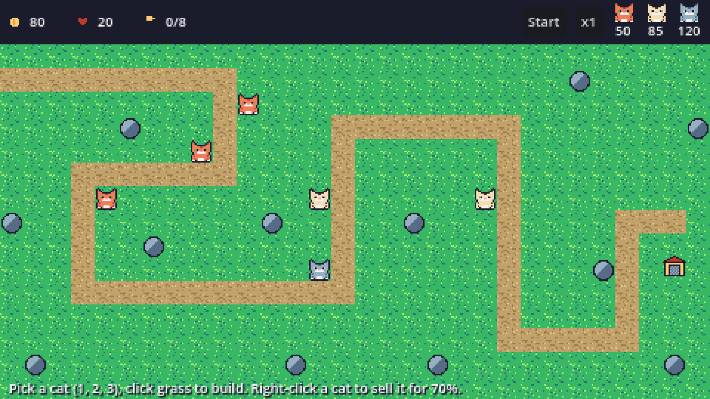
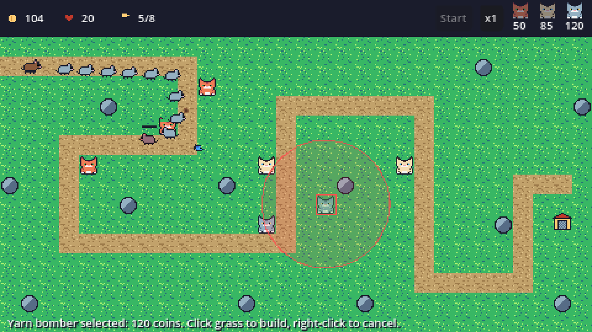
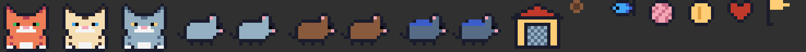

Depot Gato
Godot 4 pixel-art tower defense: cats defend the depot from eight waves of mice and rats

Overview

Depot Gato is a 2D pixel-art tower defense game built in Godot 4 with GDScript. Waves of mice and rats walk a winding dirt road toward a depot, and you place cats on the grass beside the road to stop them. Three cats, three enemies, eight waves, one map.
It was built to learn Godot properly: composing scenes and instancing them at runtime, steering enemies with NavigationAgent2D, decoupling the HUD with signals and an autoload, and keeping game balance in data files instead of code.
It is also tested like software. A headless test scene runs 28 checks, three of which are complete games played by the test itself as fast as the CPU allows: with no towers the depot must fall, with a sensible build plan all eight waves must be held, and with only three basic cats the defence must fall mid-game, which proves the waves really escalate.
The source code is on GitHub at TYFSADIK/depot-gato. The project dates from 2024; the code was rebuilt and published in 2026 on Godot 4.7, with the tests and the screenshot tool.
Gameplay
You start with 120 coins and 20 lives. Pick a cat in the top bar (or press 1, 2 or 3), and a ghost follows the mouse showing the cat's range: green where you can build, red where you cannot (the road, a rock, an occupied tile, or not enough coins). Right-click a cat to sell it for 70% of its price. Kills pay coins, and every cleared wave pays a bonus.
| Cat | Cost | Range | Fire rate | Damage | Shot |
|---|---|---|---|---|---|
| Tabby | 50 | 44 px | every 0.45 s | 4 | Kibble, single target |
| Siamese sniper | 85 | 100 px | every 1.5 s | 24 | Fish, fast and heavy |
| Yarn bomber | 120 | 52 px | every 1.3 s | 10 | Yarn ball, splash radius 22 px |
| Enemy | Health | Speed | Reward | Lives lost |
|---|---|---|---|---|
| Mouse | 14 | 34 px/s | 4 | 1 |
| Rat | 45 | 22 px/s | 8 | 2 |
| Armored rat | 160 | 15 px/s | 25 | 5 |


Architecture
Every gameplay entity is its own scene: enemy.tscn with three inherited variants (mouse, rat, armored rat), three tower scenes sharing one script, and three projectile scenes. main.tscn holds empty Towers, Enemies and Projectiles nodes that the runtime fills, which also fixes the drawing order.
GameState is an autoload that owns coins, lives and the wave number and emits currency_changed, lives_changed, wave_changed, countdown_changed and game_over. The HUD connects to those signals and to nothing else, so no gameplay node holds a reference to the HUD and the HUD never reads a gameplay node.
| Physics layer | Used by | Detects |
|---|---|---|
| 1, enemies | Enemy bodies | nothing (mask 0, so enemies never block each other) |
| 2, towers | Tower range Area2D | enemies only |
| 3, projectiles | Projectile Area2D and the yarn blast | enemies only |
Build Process
The map is 15 rows of text. level.gd builds a TileSet in code, gives the path tile a full-square navigation polygon, and fills a TileMapLayer from the text. Neighbouring path squares share edges, so the navigation map joins them into one corridor, and every enemy's NavigationAgent2D follows it. Godot 4.3 replaced TileMap with TileMapLayer, which is what this uses.
const MAP := [
"..............................",
"S#########..............x.....",
".........#....................",
".....x...#....########.......x",
# ...
"...#..........#......#....##D.",
]
var nav := NavigationPolygon.new()
nav.vertices = PackedVector2Array([Vector2(-h, -h), Vector2(h, -h), Vector2(h, h), Vector2(-h, h)])
nav.add_polygon(PackedInt32Array([0, 1, 2, 3]))
source.get_tile_data(PATH, 0).set_navigation_polygon(0, nav)The navigation map only syncs on the physics frame after the tiles register. An enemy that asks for a path on its first frame gets an empty one and would count as having arrived. So enemies start in IDLE and only set their target once the map has an iteration ID; arrival is a distance check against the depot.
func _physics_process(_delta: float) -> void:
match state:
State.IDLE:
if NavigationServer2D.map_get_iteration_id(agent.get_navigation_map()) == 0:
return
agent.target_position = depot_position
state = State.WALKING
anim.play("walk")
State.WALKING:
if global_position.distance_to(depot_position) < 6.0:
_reach_depot()
return
var next := agent.get_next_path_position()
velocity = global_position.direction_to(next) * speed
sprite.flip_h = velocity.x < -0.1
move_and_slide()A tower's range is an Area2D that keeps a live list of enemies inside it. On each cooldown tick the tower shoots the enemy with the shortest remaining path to the depot, worked out by summing the rest of the agent's path. Anything freed, dying or queued for deletion is skipped, so two towers never waste shots on a corpse.
func pick_target() -> Enemy:
var best: Enemy = null
var best_left := INF
for enemy in targets_in_range:
if not is_instance_valid(enemy) or enemy.is_queued_for_deletion() or not enemy.is_alive():
continue
var left := enemy.remaining_distance()
if left < best_left:
best_left = left
best = enemy
return bestThe yarn ball carries a second Area2D, the blast. When the ball touches an enemy, every enemy overlapping the blast takes damage, not only the one it hit.
func hit(enemy: Enemy) -> void:
var hit_any := false
for body in blast.get_overlapping_bodies():
if body is Enemy and body.is_alive():
body.take_damage(damage)
hit_any = hit_any or body == enemy
if not hit_any and enemy.is_alive():
enemy.take_damage(damage)Each wave is a WaveData resource in data/waves/: a list of entries, each naming an enemy scene, a count, a spawn interval and a health scale, plus a clear bonus. The wave manager reads whatever files are there, so rebalancing or adding a wave never touches code.
[resource]
script = ExtResource("1_wave")
entries = Array[Dictionary]([
{"enemy": "res://scenes/enemies/mouse.tscn", "count": 8, "interval": 0.7, "hp_scale": 1.2},
{"enemy": "res://scenes/enemies/rat.tscn", "count": 4, "interval": 1.6, "hp_scale": 1.0}])
clear_bonus = 30Each enemy builds three animations at startup: walk flips between two sprite frames, hurt flashes red and then queues walk again, and death fades and shrinks before the enemy frees itself.
Every sprite is a few lines of text in art.gd, one character per pixel and one palette letter per colour. The cats share one mirrored template in three colourways, and the enemies share one two-frame walk cycle. Textures are built and cached at startup; nearest-neighbour filtering and pixel snapping keep them crisp at any window size.
# The Tabby's head, rows 1 to 9 of 16. k outline, o orange, O dark orange,
# e green eye, n pupil, w white muzzle, p pink nose, . transparent.
"..k..........k..",
".kOk........kOk.",
".koOk......kOok.",
".koookkkkkkoook.",
".koooooOOoooook.",
".kooooooooooook.",
".kooenooooneook.",
".koooowppwooook.",
"..koowwwwwwook..",
Enemy State Machine
The state gates both movement and animation. is_alive() is false in ATTACKING and DEAD, so towers and projectiles stop treating an enemy as a target the moment it reaches the depot or dies, even before it is freed.
Game Loop
Testing
The tests are a Godot scene, run headless with a fixed frame rate so that a whole game simulates in seconds:
$ godot --headless --fixed-fps 60 res://tests/run_tests.tscn
Depot Gato tests
ok every sprite is rectangular and uses palette colours only
ok the path connects the spawn to the depot
ok eight waves load from data/waves
ok the first mouse is walking
ok it moves along the navigation path toward the depot
ok it stays on path tiles
ok with no towers the depot falls (after 4457 frames)
ok cannot build on the path
ok selling refunds 70%
ok with towers all 8 waves are held (20 lives left, 15 towers built)
ok a thin defence of three Tabbies falls (on wave 4)
...
28 passed, 0 failed- Units: sprites, the economy and its signals, the map's connectivity, and that every wave entry points at a real enemy scene
- Navigation: the first mouse walks, gets more than 50 pixels closer to the depot along the path within two seconds, and stays on path tiles
- Rules: no building on the road, on rocks or twice on one tile; selling refunds 70% and frees the tile
- Three full games: no towers (the depot falls), a 16-step build plan bought as coins allow (all eight waves held), and three Tabbies only (falls on wave 4)
The full-game tests caught a real bug: the road loops back past some tiles, so an enemy can leave a cat's range and walk into it again, and the tower then tried to connect the same signal twice. The fix checks for an existing connection and an existing entry before adding either.
A second scene, tools/capture.tscn, plays a scripted game and saves the screenshots on this page at three times the game's 480 by 270 resolution, with nearest-neighbour scaling.
Challenges and Lessons Learned
Navigation timing is a frame-order problem. Asking for a path before the navigation map has synced returns nothing. Waiting for the map's iteration ID, instead of guessing with a timer, makes spawning reliable.
Loops in the path break simple assumptions. A tower assumed an enemy enters its range once. The winding road disproved that, and the simulation found it.
Balance is data, and it can be tested. Because waves and stats live in data, the tests can play real games and assert that a strong defence wins and a weak one loses. That turns "feels too easy" into a failing test.
Autoloads and test scripts. Godot does not register autoloads for a script run with -s, so code that uses GameState fails to compile there. Running the tests as an ordinary scene gives them the same environment as the game.
Pixel art needs nearest filtering everywhere. The project-wide texture filter, pixel snapping and integer window scaling together keep 16-pixel sprites sharp at 1440 by 810.
What I Learned
- Godot 4 scene composition: separate scenes, inherited scenes and runtime instancing
TileMapLayer, tile sets built in code, and navigation polygons on tilesNavigationAgent2Dpath following, and when the navigation map is actually ready- Signals and an autoload as a data bus between gameplay and UI
Area2Ddetection with physics layers and masks- Resources as game data, and automated play-testing to keep the balance honest
What You Need
| Category | Item | Notes |
|---|---|---|
| Engine | Godot 4.4 or later | Built and tested on 4.7; uses TileMapLayer and ResourceLoader.list_directory |
| Hardware | Any computer that runs Godot | The game renders at 480 by 270 |
| Skill | GDScript basics | Variables, functions, signals |
| Skill | 2D game concepts | Scenes, physics layers, the game loop |
What Is Next
- Upgrades for placed cats, and a fourth cat that slows enemies
- More maps, chosen from a menu
- Sound effects and music
- A web build on itch.io
- A melee rat that attacks the nearest cat, using the reserved attacking state